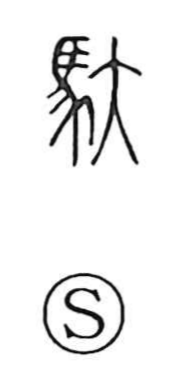

駄

Uncategorized
Kun: | On: da, ta
packhorse ・ to load ・ useless ・ inferior
Explanation
A phono-semantic character: the horse component signals the field of carrying goods by packhorse, while the phonetic 太 (on reading tai/ta) supplies the sound value that yields the Japanese on readings da/ta. Its original sense is to load baggage onto a horse’s back, reflected in usages such as dasai suru “to load” and dachin, the transport fee for such carriage. In Japanese it also appears phonetically in geta (下駄, wooden clogs) and developed an evaluative nuance for things of little worth, as in dame (駄目), muda (無駄), and dasaku (駄作). The established written form is 駄.